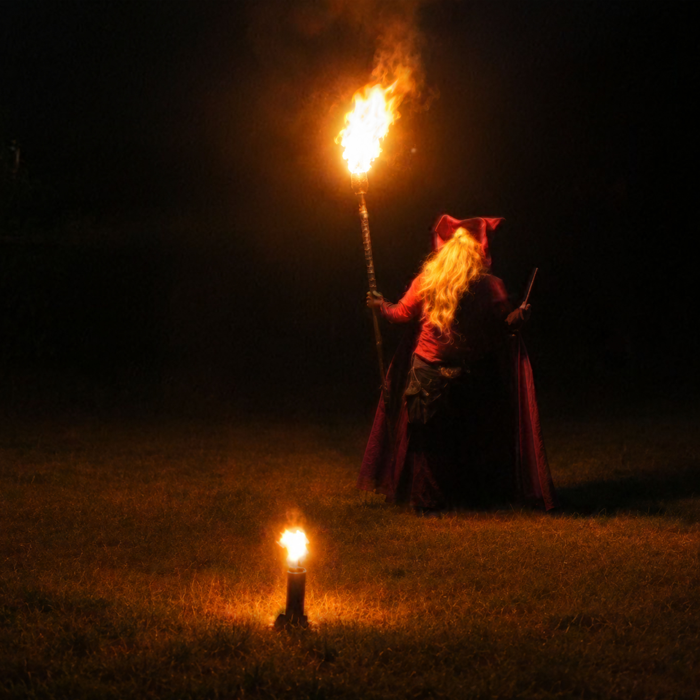
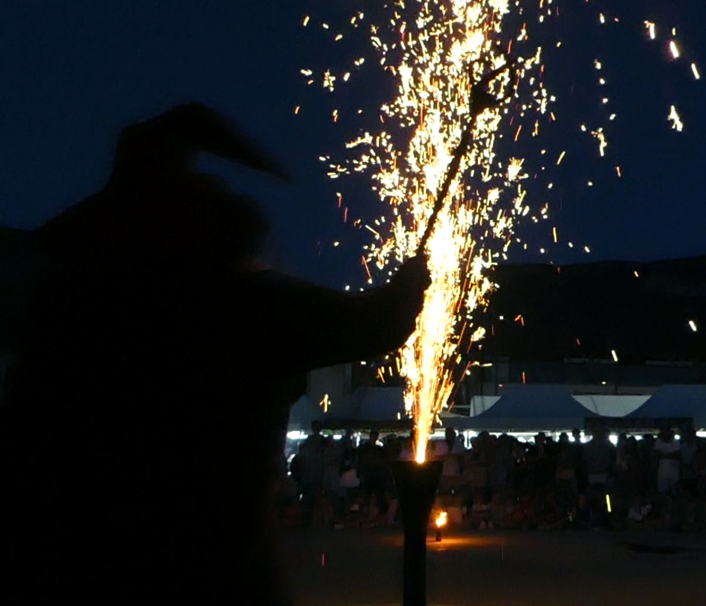
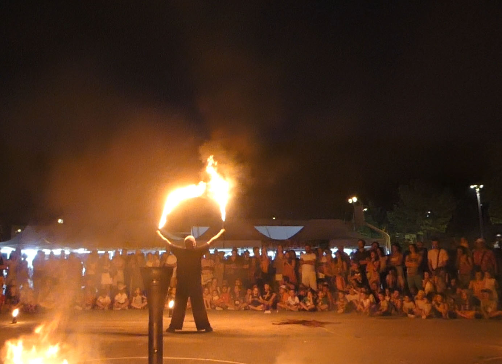

Sortilèges de feu
Dans une mise en scène théâtrale, Flamborius dévoile ses mystérieux sortilèges
et quelques-uns de ses tours de magie enflammés.
Quand la nuit tombe, un vieux mage surgit avec son grimoire, sa marmite, ses sortilèges... et une mémoire un peu défaillante. Aidé par le public, il réveillera les flammes avant de vous entraîner dans un spectaculaire voyage mêlant humour, magie, pyrotechnie et arts du feu. Mais une mystérieuse potion pourrait bien lui rendre sa jeunesse... le temps d'un ultime défi. Un spectacle interactif et familial qui émerveillera petits et grands, jusqu'à un final de feu inoubliable.
Dans ce spectacle familial mêlant magie, humour et prouesses enflammées, Flamborius, un sorcier aussi mystérieux qu’excentrique, vous dévoile quelques-uns de ses plus étonnants sortilèges de feu. Mais notre vieux sorcier n’a rien perdu de sa fougue… du moins, c’est ce qu’il prétend ! Bien décidé à prouver qu’il en a encore sous la cape, Flamborius délaisse peu à peu ses sortilèges pour se lancer dans une démonstration de feu aussi dynamique qu’impressionnante. Entre maladresses, surprises et performances enflammées, une chose est sûre : avec Flamborius, la magie risque bien de devenir incontrôlable !

Présence scénique & magie
Chaudron & sortilège
La Fougue du Sorcier
Dans une mise en scène théâtrale, Flamborius dévoile ses mystérieux sortilèges
et quelques-uns de ses tours de magie enflammés.
Jonglerie, manipulations et effets de feu originaux s’entremêlent dans un univers magique et poétique.
Une démonstration technique dynamique mêlant différents agrès et figures de jonglage avec le feu.
Un final explosif mêlant braises et étincelles, suivi du dernier sortilège de Flamborius :
un petit feu d’artifice pour conclure la représentation.
Ce spectacle est particulièrement adapté aux événements recherchant une ambiance familiale, magique et pleine d’humour, où petits et grands peuvent se laisser embarquer dans l’univers d’Flamborius.
Un spectacle qui s’intègre naturellement dans les fêtes médiévales, marchés historiques et événements costumés grâce à l’univers de mage d’Flamborius.
Une animation visuelle et interactive qui mêle magie, feu et humour pour divertir aussi bien les enfants que les adultes.
Un spectacle familial et participatif, idéal pour animer une kermesse ou une fête d’école et émerveiller les enfants comme leurs parents.
Un univers chaleureux et féerique où les flammes, les sortilèges et la participation des enfants viennent accompagner l’ambiance des fêtes.
Un spectacle qui réunit petits et grands autour d’un personnage attachant, avec une bonne dose de magie, d’humour et de feu.
Environ 40 minutes.
Spectacle de feu théâtralisé, jonglage enflammé et effets pyrotechniques.
Tout public, avec une orientation particulièrement adaptée aux évènements et publics familiaux.
Vous souhaitez programmer ce spectacle?
Contactez-moi pour me présenter votre événement et connaître
les possibilités d’accueil du spectacle.
Réponse personnalisée et devis gratuit.